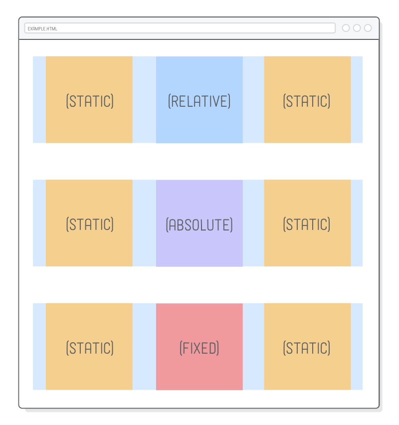
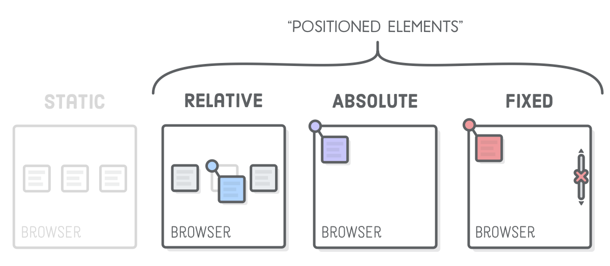
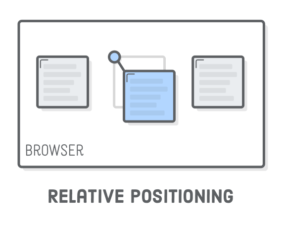
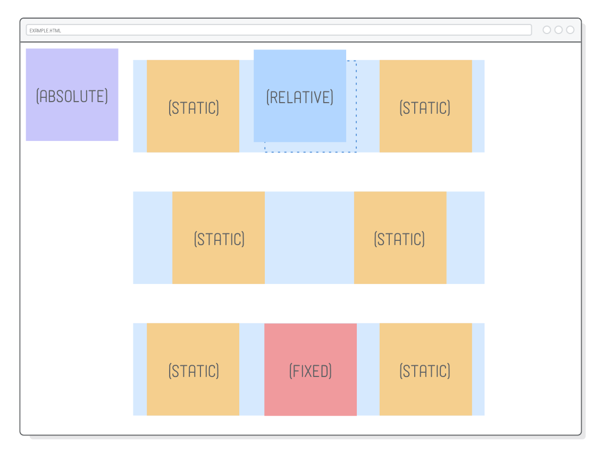
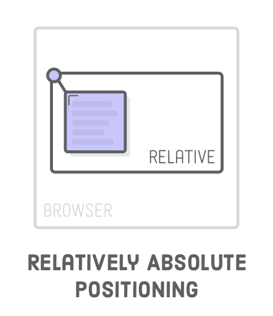
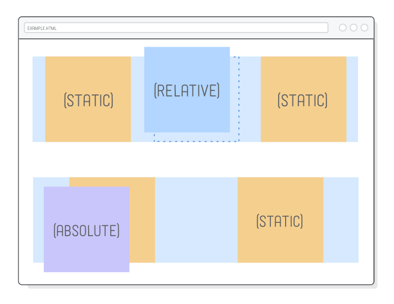
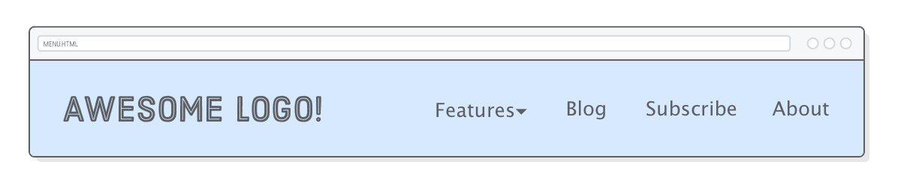

Um tutorial amigável sobre posicionamento estático, relativo, absoluto e fixo
“Posicionamento estático” refere-se ao fluxo padrão da página que
estivemos trabalhando até o momento. Os esquemas de layout
Modelo de Caixa CSS,
floats, e
flexbox operam nesse fluxo "estático", mas esse não é o único
esquema de posicionamento disponível no CSS.
Os outros três tipos de posicionamento são "relativo", "absoluto", e
"fixo". Cada um deles permite que você manualmente posicione elementos utilizando
coordenadas específicas, ao contrário das opções mais semanticas dos
flexbox e floats. Ao invés de dizer "Coloque essa caixa no centro do seu
container", o posicionamento avançado permite-lha dizer coisas como
"Coloque aquela caixa 20 píxeis acima e 50 píxeis à direita da origem
de seu elemento pai"
A grande maioria dos elementos em uma página web deveriam ser
dispostos de acordo com o fluxo estático da página. Estes outros
esquemas de posicionamento entram em jogo quando você quer fazer
coisas mais avançadas como ajustar a posição de um elemento particular
ou animar um componente da interface do usuário sem bagunçar os
elementos ao redor.
Este capítulo é dividido em duas partes. Começaremos examinando
posicionamento relativo, absoluto e fixo isoladamente, e então
aplicaremos tudo que aprendemos em um bonito dropdown menu.
Setup
Comece criando um novo
projeto Atom
chamado posicionamento-avancado e um novo arquivo chamado
esquemas.html com o seguinte cógigo:
Nós temos três exemplos para trabalhar, todos com exatamente a mesma
estrutura html. Alterar o comportamento de posicionamento dentro de
cada um tem efeitos dramaticamente diferentes.
Essa página depende de algumas imagens para
deixar nosso exemplo um pouco mais caro. Mantenha a pasta das
imagens pai no seu projeto ao descompactar os arquivos
para o seu projeto, como mostrado acima.
Assegure-se de criar um
styles.css e preenchê-lo com a base necessária de estilos,
assim como:
Nothing new here, just some familiar
flexbox techniques to create a
grid of items. The only weird thing is the explicit
height on the <body> element, which
will let us scroll up and down the page to demonstration different
positioning behaviors.

Positioned Elements
The CSS position property lets you alter the
positioning scheme of a particular element. Its default value, as
you might imagine, is static. When an element’s
position property doesn’t have a value of
static, it’s called a “positioned element”. Positioned
elements are what this entire chapter is about.

It’s possible to mix-and-match different positioning schemes. Again,
most of your web page should be statically positioned, but it’s
common to find relatively and absolutely positioned elements inside
of other elements that are part of the normal flow of the page.
Relative Positioning
“Relative positioning” moves elements around relative to
where they would normally appear in the static flow of the page.
This is useful for nudging boxes around when the default flow is
just a little bit off.

Let’s turn the .item-relative element in
schemes.html into a relatively positioned element. Add
the following rule to styles.css:
The position: relative; line makes it a positioned
element, and the top and left properties
let you define how far it’s offset from its static position. This is
sort of like setting an (x, y) coordinate for the
element.
Relative positioning works similarly to margins, with one very
important difference: neither the surrounding elements or parent
element are affected by the top and
left values. Everything else renders as if
.item-relative was in its original position. Think of
the offsets as being applied after the browser finishes
laying out the page.
The top and left properties measure from
the original box’s top and left edges, respectively. We can offset
relative to the other edges with the bottom and
right properties.
For example, the following will nudge the box in the opposite
direction:
Note that these properties accept negative values, which means
there’s two ways to specify the same offset. We could just as easily
used top: -30px; in place of the
bottom: 30px; declaration above.
Absolute Positioning
“Absolute positioning” is just like relative positioning, but the
offset is relative to the entire browser window instead of the
original position of the element. Since there’s no longer any
relationship with the static flow of the page, consider this the
most manual way to lay out an element.
Let’s take a look by adding the following rule to our stylesheet:
Our HTML structure is the exact same as the previous example, but
this will stick the purple image in the top-left corner of the
browser window. You can also try setting a bottom or
right value to get a clearer idea of what’s going on.

The other interesting effect of absolute is that it
completely removes an element from the normal flow of the page. This
is easier to see with left-aligned elements, so let’s temporarily
change the justify-content property in our
.example rule:
In our relative positioning example (the first row), there’s still a
space where the positioned element used to be, but with absolute
positioning, that space has vanished. It’s as if
.item-absolute doesn’t even exist to its parent and
surrounding elements. Be sure to change the
justify-content back to
space-around before moving on.
This behavior isn’t really all that useful most of the time because
it would mean everything on your page needs to be
absolutely positioned—otherwise we’d get unpredictable
overlaps of static elements with absolute elements. So, why does
absolute even exist?
(Relatively) Absolute Positioning
Absolute positioning becomes much more practical when it’s relative
to some other element that is in the static flow of the
page. Fortunately, there’s a way to change the coordinate system of
an absolutely positioned element.

Coordinates for absolute elements are always relative to the closest
container that is a positioned element. It only falls back to being
relative to the browser when none of its ancestors are positioned.
So, if we change .item-absolute’s parent element to be
relatively positioned, it should appear in the top-left corner of
that element instead of the browser window.
.absolute {
position: relative;
}
The .absolute div is laid out with the normal flow of
the page, and we can manually move around our
.item-absolute wherever we need to. This is great,
because if we want to alter the normal flow of the container, say,
for a mobile layout, any absolutely positioned elements will
automatically move with it.

Notice how we didn’t specify any offset coordinates for
.absolute. We’re using relative positioning for the
sole purpose of letting our absolute element hook back into the
normal flow of the page. This is how we safely combine absolute
positioning with static positioning.
Fixed Positioning
“Fixed positioning” has a lot in common with absolute positioning:
it’s very manual, the element is removed from the normal flow of the
page, and the coordinate system is relative to the entire browser
window. The key difference is that fixed elements don’t scroll with
the rest of the page.
Go ahead and update our third example to use fixed positioning:
This will place the red image in the bottom-right corner of the
screen. Try scrolling the page, and you’ll discover that it doesn’t
move with the rest of the elements on the page, while the absolutely
positioned purple image does.
This lets you create navigation bars that always stay on the screen,
as well as those annoying pop-up banners that never go away.
Positioned Elements for Animation
This is a little out of scope, since this tutorial is about HTML and
CSS, not JavaScript. However, animation is one of the primary use
cases for relative and absolute positioning, so let’s take a little
peek into the future by animating one of our elements.
These advanced positioning schemes allow JavaScript to move elements
around while avoiding any kind of interaction with surrounding
elements. For instance, try copying-and-pasting the following into
schemes.html after the third
.container element. The
<script> element should be the last thing inside
of <body>.
<script>var left = 0;
functionframe() {
var element = document.querySelector('.item-relative');
left += 2;
element.style.left = left + 'px';
if (left >= 300) {
clearInterval(id)
}
}
var id = setInterval(frame, 10)
</script>
This JavaScript code creates a simple animation that continually
updates the left property of the
.item-relative. When you reload the page, you should
see the blue image float to the right edge of its container.
This is a pretty rudimentary example, but you can hopefully see how
it’s applicable to fancy UI animations. If you were to try to
achieve the same effect by manipulating the margin or
padding properties, you would inadvertently move the
statically positioned boxes and/or the containing
.example element, too.
Positioned Elements for Menus
So, those are all the techniques. Let’s do something
advanced with them! The rest of this chapter applies our
newfound skills towards a fancy navigation menu with an interactive
dropdown for one of its links. We’ll be building
this page entirely
from scratch.
Fixed positioning will let us make the menu stick to the top of the
page, and relative positioning will give us an anchor for the
absolutely positioned dropdown. We’ll also get a chance to talk
about navigation menu best practices and see some practical
applications of the
pseudo-classes
we talked about in CSS Selectors.
For starters, we need a new web page called
menu.html that has a header and a simple top-level
menu:
Navigation menus should almost always be marked up as a
<ul> list instead of a bunch of
<div> elements. These semantics make your site’s
navigation much more accessible to search engines. Also notice how
we’re preparing for our dropdown menu by adding a
class attribute to the first <li> in
the list. That <span> will allow us to
differentiate the label from the submenu it reveals.
Next, we need a new stylesheet called menu.css that
makes our .header look a little bit more like a header,
among other things:
This should all be familiar, but note the
fixed position of the .header, which keeps
our navigation menu on top of any content that would go into the
page.
Inline Menu Items
Despite being marked up as unordered lists, the navigation menus for
most websites don’t actually look like a list. We can fix this by
making the list items
inline boxes
instead of block boxes via the display property. Add
the following to menu.css:
We have to use
child selectors
here instead of
descendant selectors
because we only want to select <li> elements that
are directly inside the .menu. This will become
important once we add our submenu, which has its own
<li> elements that we don’t want to style with
this rule. This snippet also adds margins to all the list items, but
removes it from the final <li> using the
:last-of-type pseudo-class. This is a pretty common
technique for creating margins between items.

Submenus
Our submenu is going to look just like the top-level menu, except
the whole thing will be nested inside a list item. Change the
.menu element to match the following, ensuring that the
entire .features-menu list is wrapped in the first
<li> of the .menu element.
<ulclass='menu'><liclass='dropdown'><span>Features ▾</span><ulclass='features-menu'><!-- Start of submenu --><li><ahref='#'>Harder</a></li><li><ahref='#'>Better</a></li><li><ahref='#'>Faster</a></li><li><ahref='#'>Stronger</a></li></ul><!-- End of submenu --></li><li><ahref='#'>Blog</a></li><!-- These are the same --><li><ahref='#'>Subscribe</a></li><li><ahref='#'>About</a></li></ul>
This provides a lot of crucial information for search engines. It
allows Google to see that all these new items are associated with
the Features label and that they form an isolated
section of our website. You should always mark up complex navigation
menus with this kind of structure.
As for the CSS, we’ll deal with the interactive dropdown part later.
Right now, let’s just get our submenu looking the way we want it to.
Add some simple styles so we can see the box we’re trying to
position:
The submenu itself is styled correctly, but it’s showing up in the
wrong place and severely messing up the rest of our top-level menu
items. This should be expected because it’s still statically
positioned, which means it still interacts with its parent and
surrounding elements.
To create our desired layout, we need to call on our new CSS
positioning skills.
(Relatively) Absolute Submenus
We want our other top-level menu items to display just like they did
before we added the submenu, as if the submenu wasn’t even there.
Wait a second…that’s the exact behavior of absolutely
positioned elements. Let’s give it a shot. Add a few lines to the
.features-menu rule:
Great! The submenu is no longer part of the static flow of the page,
so our top-level menu items are back to normal. However, the submenu
should appear underneath the
Features label—not in the corner of the
browser window. What a coincidence…we just learned how do
that!
The submenu resides in <li class='dropdown'>.
Turning that into a positioned element should change the coordinate
system used by our absolutely positioned
.features-menu:
.dropdown {
position: relative;
}
Ok, next problem. Our submenu is in the right spot, but now it’s
covering up the Features label.
Z-Index
We’ve never had to deal with “depth” issues before. Until now, all
our HTML elements rendered above or below one another in an
intuitive way. But, since we’re doing advanced stuff, relying on the
browser to determine which elements appear on top of other ones
isn’t going to cut it.
The z-index property lets you control the depth of
elements on the page. If you think of your screen as 3D space,
negative z-index values go farther into the page, and
positive ones come out of the page.
In other words, the .features-menu element needs to
have a lower z-index than the
Features label. The default
z-index value is 0, so let’s make both of
them higher than that. We conveniently wrapped the
Features label in a <span>,
allowing us to style it via a child selector, like so:
The Features label should now appear on top of the
submenu. Take note of that position: relative; line.
It’s required because only positioned elements pay
attention to their z-index property. This is easy to
forget, so make a mental note for the next time you’re having depth
issues and your CSS rules don’t seem to have any effect.
We threw in an example of the cursor property to make
it look like a link when the user hovers over the label. You can
read more about it at
Mozilla Developer Network.
Pseudo-Classes for Dropdown Menus
Alright! Submenu done! Our final task is to hide it until the user
hovers over it. Remember that
:hover pseudo-class
from the CSS Selectors chapter? We can use that to turn our
submenu into an interactive dropdown.
First, we need to change our existing
.features-menu rule to only show the submenu when the
user hovers over it by adding a :hover descendant
selector. Update the .features-menu selector to match
the following:
.dropdown:hover.features-menu { /* This used to be `.features-menu` */display: flex; /* Leave everything else alone */flex-direction: column;
background: #B2D6FF;
/* ... */
}
Then, we need to initially hide the submenu using the
display property. Add a new rule to
menu.css:
.features-menu { /* Add this as a new rule */display: none;
}
Setting display to none makes an element
completely disappear. By overriding that value with
flex in the :hover rule, we’re effectively
telling the browser to show the .features-menu again.
This clever combination of descendant selectors and pseudo-classes
enables us to conditionally hide or show an element.
Summary
In this chapter, we took a look at four new CSS layout schemes:
Relative
Absolute
Relatively absolute
Fixed
Relative positioning was for tweaking the position of an element
without affecting its surrounding boxes. Absolute positioning took
elements out of the static flow of the page and placed them relative
to the browser window, while relatively absolute positioning allowed
us to hook back into the static flow of the page. Finally, fixed
positioning let us make elements that didn't scroll with the rest of
the page.
We used these new positioning techniques to create a rather
sophisticated navigation menu. If it felt complicated, that’s cause
it was. But don’t worry, you shouldn’t feel pressure to
memorize the HTML and CSS behind our menu. Your goal should
be to have the ability to reference this example three months from
now and understand what all those
position: relative; and
position: absolute; declarations are doing.
This menu was also a pretty good example of how starting with the
HTML markup makes life a lot easier. First, we created the semantic
structure we wanted. Then, we wrote some fancy CSS to
position the boxes right where we wanted them. Whenever you’re
looking at a complicated mockup and not sure where to start, this is
good way to approach the problem.
There’s still one big issue with our menu: it’s not built for mobile
devices. Smartphones and tablets don’t have a way to hover, and our
layout doesn’t display well when the browser is narrower than 960
pixels. The former requires a little bit of JavaScript magic (or
some really advanced CSS), so we’ll leave that for another
tutorial. But, we will be able to tackle the latter problem with
some responsive design in the next chapter.